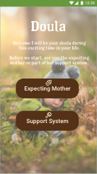

  <main>

    <div class="grid pad-t-2 gutter">

      <div class="img unit [ xs-1 s-1 m-1-2 l-1-2 ] unit-push-m-1-2">

        <div class="unit [ xs-1 s-1 m-1-2 l-1-2 ]">
          
        </div>


        <p itemprop="name">Doula</p>
        <p itemprop="description">Being pregnant can cause a lot of physical and emotional strain on mothers to be. This can lead to complications that threatens the health or life of the mother and or baby. It can often make these soon to be parents feel helpless. Only getting news on their baby’s health through weekly OB/GYN can add to the pressure to an already stressful time. The app is used to track the baby’d and mother’s progess at all times with the use of the wearable during the pregnacy. </p>
      </div>

      <div class="content gutter-half unit [ xs-1 s-1 m-1-2 l-1-2 unit-pull-m-1-2 ]">

          <div class="nav unit xs-1 s-1 m-2-3 l-2-3 pad-top-half pad-bottom-half side-nav">
            <nav>
              <ul class="push-none list-group text-left giga pad-t-3">
                <li class="exa"><a href="{{site.baseurl}}/illustration.html">Illustration</a></li>
                <li class="nina gutter current"><a href="{{site.baseurl}}/applications.html">Applications</a></li>
                <li class="exa"><a href="{{site.baseurl}}/motion.html">Motion</a></li>
                <li class="exa"><a href="{{site.baseurl}}/mixed-media.html">Mixed Media</a></li>
                <li class="exa"><a href="{{site.baseurl}}/branding.html">Branding</a></li>
              </ul>
            </nav>
          </div>

        </div>

      </div>

  </main>
